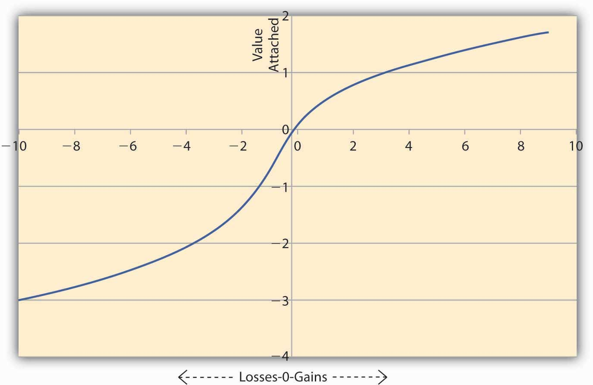

Why do some people jump into the river to save their loved ones, even if they cannot swim? Why would mothers give away all their food to their children? Why do we have herd mentality where many individuals invest in the stock market at times of bubbles like at the latter part of the 1990s? These are examples of aspects of human behavior that E(U) theory fails to capture. Undoubtedly, an emotional component arises to explain the few examples given above. Of course, students can provide many more examples. The realm of academic study that deals with departures from E(U) maximization behavior is called behavioral economicsRealm of academic study that deals with departures from E(U) maximization behavior..
While expected utility theory provides a valuable tool for analyzing how rational people should make decisions under uncertainty, the observed behavior may not always bear it out. Daniel Kahneman and Amos Tversky (1974) were the first to provide evidence that E(U) theory doesn’t provide a complete description of how people actually decide under uncertain conditions. The authors conducted experiments that demonstrate this variance from the E(U) theory, and these experiments have withstood the test of time. It turns out that individual behavior under some circumstances violates the axioms of rational choice of E(U) theory.
Kahneman and Tversky (1981) provide the following example: Suppose the country is going to be struck by the avian influenza (bird flu) pandemic. Two programs are available to tackle the pandemic, A and B. Two sets of physicians, X and Y, are set with the task of containing the disease. Each group has the outcomes that the two programs will generate. However, the outcomes have different phrasing for each group. Group X is told about the efficacy of the programs in the following words:
Seventy-six percent of the doctors in group X chose to administer program A.
Group Y, on the other hand, is told about the efficacy of the programs in these words:
Only 13 percent of the doctors in this group chose to administer program A.
The only difference between the two sets presented to groups X and Y is the description of the outcomes. Every outcome to group X is defined in terms of “saving lives,” while for group Y it is in terms of how many will “die.” Doctors, being who they are, have a bias toward “saving” lives, naturally.
This experiment has been repeated several times with different subjects and the outcome has always been the same, even if the numbers differ. Other experiments with different groups of people also showed that the way alternatives are worded result in different choices among groups. The coding of alternatives that makes individuals vary from E(U) maximizing behavior is called the framing effectThe coding of alternatives, which makes individuals vary from E(U) maximizing behavior..
In order to explain these deviations from E(U), Kahneman and Tversky suggest that individuals use a value functionA mathematical formulation that seeks to explain observed behavior without making any assumption about preferences. to assess alternatives. This is a mathematical formulation that seeks to explain observed behavior without making any assumption about preferences. The nature of the value function is such that it is much steeper in losses than in gains. The authors insist that it is a purely descriptive device and is not derived from axioms like the E(U) theory. In the language of mathematics we say the value function is convex in losses and concave in gains. For the same concept, economists will say that the function is risk seeking in losses and risk averse in gains. A Kahneman and Tversky value function is shown in Figure 3.5 "Value Function of Kahneman and Tversky".
Figure 3.5 Value Function of Kahneman and Tversky
Figure 3.5 "Value Function of Kahneman and Tversky" shows the asymmetric nature of the value function. A loss of $200 causes the individual to feel more value is lost compared to an equivalent gain of $200. To see this notice that on the losses side (the negative x-axis) the graph falls more steeply than the rise in the graph on the gains side (positive x-axis). And this is true regardless of the initial level of wealth the person has initially.
The implications of this type of value function for marketers and sellers are enormous. Note that the value functions are convex in losses. Thus, if $L is lost then say the value lost = Now if there are two consecutive losses of $2 and $3, then the total value lost feels like V (lost) = On the other hand if the losses are combined, then total loss = $5, and the value lost feels like Thus, when losses are combined, the total value lost feels less painful than when the losses are segregated and reported separately.
We can carry out similar analysis on the Kahneman and Tversky function when there is a gain. Note the value function is concave in gains, say, Now if we have two consecutive gains of $2 and $3, then the total value gained feels like V (gain) = On the other hand, if we combine the gains, then total gains = $5, and the value gained feels like Thus, when gains are segregated, the sum of the value of gains turns out to be higher than the value of the sum of gains. So the idea would be to report combined losses, while segregating gains.
Since the individual feels differently about losses and gains, the analysis of the value function tells us that to offset a small loss, we require a larger gain. So small losses can be combined with larger gains, and the individual still feels “happier” since the net effect will be that of a gain. However, if losses are too large, then combining them with small gains would result in a net loss, and the individual would feel that value has been lost. In this case, it’s better to segregate the losses from the gains and report them separately. Such a course of action will provide a consolation to the individual of the type: “At least there are some gains, even if we suffer a big loss.”
Framing effects are not the only reason why people deviate from the behavior predicted by E(U) theory. We discuss some other reasons next, though the list is not exhaustive; a complete study is outside the scope of the text.
Overweighting and underweighting of probabilities. Recall that E(U) is the sum of products of two sets of numbers: first, the utility one receives in each state of the world and second, the probabilities with which each state could occur. However, most of the time probabilities are not assigned objectively, but subjectively. For example, before Hurricane Katrina in 2005, individuals in New Orleans would assign a very small probability to flooding of the type experienced in the aftermath of Katrina. However, after the event, the subjective probability estimates of flooding have risen considerably among the same set of individuals.
Humans tend to give more weight to events of the recent past than to look at the entire history. We could attribute such a bias to limited memory, individuals’ myopic view, or just easy availability of more recent information. We call this bias to work with whatever information is easily availability an availability biasTendency to work with whatever information is easily availability.. But people deviate from E(U) theory for more reasons than simply weighting recent past more versus ignoring overall history.
Individuals also react to experience biasTendency to assign more weight to the state of the world that we have experienced and less to others.. Since all of us are shaped somewhat by our own experiences, we tend to assign more weight to the state of the world that we have experienced and less to others. Similarly, we might assign a very low weight to a bad event occurring in our lives, even to the extent of convincing ourselves that such a thing could never happen to us. That is why we see women avoiding mammograms and men colonoscopies. On the other hand, we might attach a higher-than-objective probability to good things happening to us. No matter what the underlying cause is, availability or experience, we know empirically that the probability weights are adjusted subjectively by individuals. Consequently, their observed behavior deviates from E(U) theory.
Anchoring bias. Often individuals base their subjective assessments of outcomes based on an initial “guesstimate.” Such a guess may not have any reasonable relationship to the outcomes being studied. In an experimental study reported by Kahneman and Tversky in Science (1974), the authors point this out. The authors call this anchoring biasTendency to base subjective assessments of outcomes on an initial estimate.; it has the effect of biasing the probability estimates of individuals. The experiment they conducted ran as follows:
First, each individual under study had to spin a wheel of fortune with numbers ranging from zero to one hundred. Then, the authors asked the individual if the percent of African nations in the United Nations (UN) was lower or higher than the number on the wheel. Finally, the individuals had to provide an estimate of the percent of African nations in the UN. The authors observed that those who spun a 10 or lower had a median estimate of 25 percent, while those who spun 65 or higher provided a median estimate of 45 percent.
Notice that the number obtained on the wheel had no correlation with the question being asked. It was a randomly generated number. However, it had the effect of making people anchor their answers around the initial number that they had obtained. Kahneman and Tversky also found that even if the payoffs to the subjects were raised to encourage people to provide a correct estimate, the anchoring effect was still evident.
Failure to ignore sunk costs. This is the most common reason why we observe departures from E(U) theory. Suppose a person goes to the theater to watch a movie and discovers that he lost $10 on the way. Another person who had bought an online ticket for $10 finds he lost the ticket on the way. The decision problem is: “Should these people spend another $10 to watch the movie?” In experiments conducted suggesting exactly the same choices, respondents’ results show that the second group is more likely to go home without watching the movie, while the first one will overwhelmingly (88 percent) go ahead and watch the movie.
Why do we observe this behavior? The two situations are exactly alike. Each group lost $10. But in a world of mental accounting, the second group has already spent the money on the movie. So this group mentally assumes a cost of $20 for the movie. However, the first group had lost $10 that was not marked toward a specific expense. The second group does not have the “feel” of a lost ticket worth $10 as a sunk costMoney spent that cannot be recovered., which refers to money spent that cannot be recovered. What should matter under E(U) theory is only the value of the movie, which is $10. Whether the ticket or cash was lost is immaterial. Systematic accounting for sunk costs (which economists tell us that we should ignore) causes departures from rational behavior under E(U) theory.
The failure to ignore sunk costs can cause individuals to continue to invest in ventures that are already losing money. Thus, somebody who bought shares at $1,000 that now trade at $500 will continue to hold on to them. They realized that the $1,000 is sunk and thus ignore it. Notice that under rational expectations, what matters is the value of the shares now. Mental accounting tells the shareholders that the value of the shares is still $1,000; the individual does not sell the shares at $500. Eventually, in the economists’ long run, the shareholder may have to sell them for $200 and lose a lot more. People regard such a loss in value as a paper loss versus real loss, and individuals may regard real loss as a greater pain than a paper loss.
By no mean is the list above complete. Other kinds of cognitive biases intervene that can lead to deviating behavior from E(U) theory. But we must notice one thing about E(U) theory versus the value function approach. The E(U) theory is an axiomatic approach to the study of human behavior. If those axioms hold, it can actually predict behavior. On the other hand the value function approach is designed only to describe what actually happens, rather than what should happen.